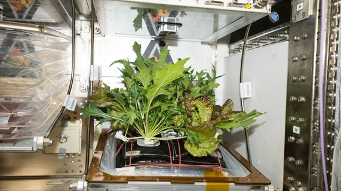

На самом деле салат не просто был в космосе в привычном смысле — он вырос в космосе! Для этого на Международной космической станции (МКС) использовали специальную систему Veggie. Её доставили на орбиту в апреле 2014 года.
По сути, это компактная «грядка»: семена помещали в специальные «подушечки» с питательной средой (на основе глины), а чтобы растения росли, их подсвечивали светодиодами (красными, синими — они нужны для фотосинтеза, а зелёный свет добавили просто для того, чтобы растения выглядели привычно для человеческого глаза). Ещё в системе были системы полива и вентиляции, которые помогали поддерживать нужный микроклимат.
Было несколько этапов:
Перед едой они обработали листья дезинфицирующими салфетками на основе лимонной кислоты. Экипаж добавил к листьям оливковое масло и бальзамический уксус. По словам Скотта Келли, по вкусу салат напоминал рукколу. При этом половину урожая сразу заморозили и отправили на Землю — учёные сравнивали космический салат с земным, чтобы понять, есть ли разница в питательной ценности и нет ли рисков из-за микробов.
Исследования показали: по составу полезных элементов космический салат не уступал земному, а микробная среда оказалась сопоставимой.
Идея в том, чтобы в будущем сделать космические миссии более самодостаточными. Сейчас большую часть еды для экипажа доставляют с Земли — это дорого и занимает место. Выращивание растений прямо на орбите поможет снизить зависимость от поставок, разнообразить рацион (свежие овощи и зелень полезнее консервированных) и даже положительно влиять на психологическое состояние экипажа в долгой изоляции. В перспективе такие системы планируют использовать и в более дальних миссиях — например, при полёте на Марс.
Позже исследования показали: в условиях микрогравитации растения становятся чуть более уязвимыми к бактериям (например, к сальмонелле). Дело в том, что крошечные поры в листьях (устьица), которые обычно закрываются при стрессе, в космосе иногда вели себя иначе — и это могло облегчать бактериям проникновение внутрь. Учёные стали искать решения: например, стерилизовать семена перед отправкой в космос или подбирать сорта, у которых генетически подавлено слишком широкое открытие устьиц и внеесохмости.
Так что «история салата в космосе» — это не просто про еду. Это про то, как в будущем мы научимся обеспечивать себя продовольствием прямо в космическом пространстве.